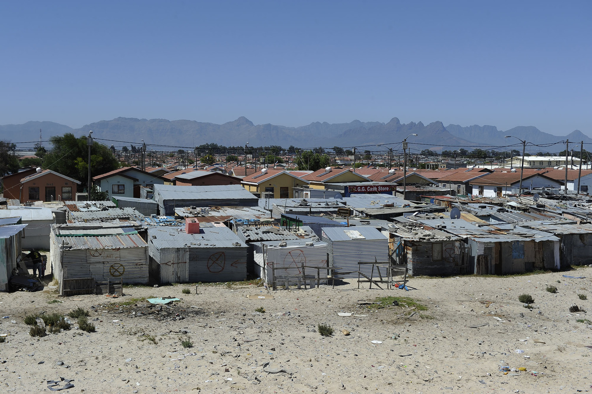

Image: Nyakathisa resident Bongani Gocina has lived in the informal settlement since 2008. Apart from six toilets and a communal tap installed in recent years, the settlement has no basic services. The majority of its residents relieve themselves in sand dunes behind their homes. Photo by Michael Walker
Cape Town's "Missing" People
The Uncounted Informal Settlements
MORE than 100 informal settlements scattered throughout the Cape Town Metro were not counted in Census 2011, according to an analysis of City of Cape Town data.
And at least 23 new informal settlements have sprung up around the Metro between 2013 and 2015, as more and more people flood into Cape Town from the Eastern Cape in search of work.
The data is based on a survey of toilet facilities in informal settlements collected by the city. Although the date when the data was collected is not known, it was conducted after the 2011 national census. The data became public after NGO Ndifuna Ukwazi used the Promotion of Access to Information Act (PAIA) to force the city to release it. “We wanted to know how many toilets and other water and sanitation assets the city had in informal settlements. We also wanted GPS coordinates to know where they are so we could check if they existed,” the NGO said.
Using the GPS coordinates Julia Renouprez, a data wrangler at Code for South Africa, located the informal settlements on a map using Google Earth. She then matched the coordinates with census information to find the demographics of people who lived in the informal settlements.
“What I discovered was that in many instances the census small area layer boundaries matched exactly the boundaries of these clusters of shiny tin roofs on the satellite images, which tells me that the census sampling took them into account,” she said. “But there were also many instances where the boundaries of the informal settlements had no correlation at all with the census boundaries, suggesting that they had never been counted,” she said.
Using the map: Scores of Cape Town informal settlements were not counted in Census 2011. On the map uncounted settlements are shaded in red while those which developed between 2013 and 2015 are shaded in green. The area shaded in blue show informal settlements as counted in Census 2011. Some portions of the blue and the red layers overlap which shows that some missed areas form small portions of the counted areas. Hover on the map to see the name of the uncounted settlement and click on the shaded area to read the extent to which a settlement was counted in 2011.
During the 2011 Census, Statistics South Africa counted 216 informal settlements in the Metro, home to 570 035 people.
But, using the toilet facilities data, Weekend Argus can reveal that 111 informal settlements were never counted. In some cases this number consist of shacks that have mushroomed on empty pieces of land between houses in built up areas.
For purposes of enumeration during the Census, living spaces were divided into Enumeration Areas which are small geographic units assigned to one person to enumerate. The enumeration areas make up Small Areas which make up Sub Places, which in turn form Main Places.
Photo by Michael Walker
Image: Mfuleni Resident walks on the road dividing RDP housing and Nyakathisa informal settlement. Photo by Michael Walker
Statistics South Africa spokesman Trevor Oosterwyk denied that some informal settlements were not included in the 2011 count. “The City of Cape Town is 100 percent covered with enumeration areas (EAs). Unless an EA was not enumerated, all people were enumerated,” Oosterwyk said.
Asked about Cape Town settlements which were not reflected in the Census, he said: “The fact that we do not have these names as sub-places does not mean the areas were not enumerated. No omissions were made,” he said.
But he admitted that some people could have been left out because they were not in their homes when the enumerators visited their areas. “People who work in places far away from home and, thus leave very early in the morning and return late in the evening were difficult to enumerate. Enumerators only worked between 8am and 7pm and there would be people who leave their homes at 5am and return after 8pm for instance. In most cases this was mitigated by making suitable appointments with people to be counted,” he said.
While it is not possible to say how many residents of informal settlements were not counted, in the Nyakathisa settlement, which is part of Mfuleni township, none of the residents Weekend Argus spoke to were visited by enumerators or knew of someone who had been. It falls within Ward 108 of the City of Cape Town and consists of a mix of formal and informal housing. Nyakathisa is made up of shacks that have sprung up on an open piece of ground within ward 108.
Narrow passages run between the shacks in which people with access to communal taps, but not toilets, live. Behind the shacks are foul smelling sand dunes that people living in the settlement use as a toilet.
Father-of-three Bongani Gocina, who has lived in a shack in the settlement since 2007, moved to Cape Town from the Eastern Cape to look for work and found a seasonal job as a construction worker. He says he was not visited by a 2011 Census enumerator and also did not receive an appointment request. “There were about 30 shacks here when I came, but the settlement has grown since then. I do not remember anyone doing census here in 2011,” he said.
Gocina expressed shock when he learned that his settlement was not counted.
“This is painful because we have been hopeful that we are being considered, especially for houses and electricity. It seems no one even knows we exist yet we have been voting,” he said shaking his head.
Like many other Nyakathisa residents, Gocina said they seldom saw the area’s ward councillor, Themba Honono of the ANC.“We sometimes hear that he is visiting Bardale or other sections but we have never met him here,” the resident said.
Residents of Extension 6 confirmed that the informal settlement existed long before the 2011 census. “A lot of us lived there until some people, including myself, moved into these RDP houses in 2008,” said Thembakazi Banjwa.
Nyakathisa was meant to be a temporary settlement while the houses were being built,” she said.
The squalor and unhealthy living conditions of Nyakathisa were affecting Extension 6 and “until recently Nyakathisa had no water or toilets. They used our water and our bills were very high,” she said. “They still do not have electricity, hence you see illegal connection,” Banjwa said.
A walk through Nyakathisa revealed the dire conditions which residents live in. The shacks are crammed tightly together, with narrow passages in between. There are only six communal toilets at the front of the settlement, which are kept locked and only used by the 18 households they were allocated to in 2013. The rest of the estimated 200 residents use the sand dunes behind their homes as an open air toilet.
Shack dwellers have set up illegal electrical connections to low cost houses across the road, paying a fee that is determined by the owners.
Census data is used for planning purposes and if, for any reason, people were omitted from the count, the data would not be a true reflection of the South African population,” said Oosterwyk.
“The Census is important because this process helps compile a numerical profile of South Africa. This in turn informs decision-making at all levels both in government and the private sector,” Oosterwyk said. “A population census is a total count of the country’s population, where demographic, social and economic information, as well as information about the housing conditions of the people who live in South Africa is gathered,” he said.
The member of the Cape Town mayoral committee for human settlements, Benedicta van Minnen did not deal with questions about informal settlements not being counted. She said the city conducted its own surveys in informal settlements “to ensure that our records are kept updated and that we have a specific understanding of the dynamics within informal settlements pertaining to the growth of the population, service levels and future service requirements”.
The ANC ward councilor for ward 108, under which Nyakathisa falls, Themba Honono, failed to respond to a request for comment.
noloyiso.mtembu@iol.co.za
How we did it
March - August 2015
Ndifuna Ukwazi (NU) made numerous requests to the City of Cape Town for data concerning water and sanitation in informal settlements in Cape Town. Eventually after submitting a PAIA (Promotion of Access to Information Act) request the City of Cape Town supplied NU with a number of scanned pdf documents containing the type and GPS location of public toilet facilities in informal settlements
September - October 2015
Code for South Africa gained access to these pdf’s from NU and converted the pdf’s to compile a single database of all the public toilet locations in Cape Town’s informal settlements. These locations were then mapped, and used to pinpoint them on Google Earth. The boundaries of the informal settlements were drawn in reference to the location of the clusters of tin-shack housing on Google Earth and the Census 2011 Small Area Layer boundaries.
This process linked the informal settlements to the 2011 Census data, which
-
Provided the link to populate the household counts and demographics of those informal settlements that aligned with the Small Area Layer boundaries, and
-
Highlighted a number of informal settlements that were unaccounted for by the Small Area Layer boundaries
March 2015
Using rooftop points pinpointed by a Geoterraimage Growth Indicator dataset, which were captured from satellite imagery taken in 2013. From this Code for South Africa was able to identify 2013 “new” informal settlements that were not in existence in 23.

Photo by Michael Waker
Image: A view of Nyakathisa Informal Settlement, Mfuleni. Photo by Michael Walker
This story was produced by

Credits
Journalist Noloyiso Mtembu
Developer/Designer Lailah Ryklief
Photography Michael Walker
Video Lailah Ryklief
This story was made possible by the support contributions of:
Julia Renouprez and GeoTerraImage